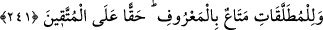
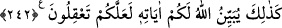

Kocaları ölen kadınlar kendi istekleriyle eşlerinin evlerinden çıkarlarsa, ey imam ve
hâkimler, onların zînetlenme, koku sürünme, yası terketme ve üstü kapalı olarak evlilik
tekliflerine muhâtab olma gibi şerîatın uygunsuz karşılamadığı davranışlarda
bulunmalarından ötürü bir günah yoktur. Bu âyet, kadının, kocasının evinde kalmasının
ve onun ölümüne yas tutmasının şart olmadığına; bilakis kocasının evinde kalıp nafaka
almak ile evden çıkıp nafakayı terketmek arasında muhayyer bulunduğuna delâlet
etmektedir.
Allah Azîz’dir; emrini yerine getirmeye kadir olup emrine muhalefet edenleri
cezâlandırır. Hakîm’dir; koyduğu hükümlerde kullarının maslahatını gözetir.
241. Boşanmış kadınların, hakkaniyet ölçülerinde (kocalarından) menfaat
sağlamak haklarıdır; bu, Allah korkusu taşıyanlar üzerine bir borçtur.
Kendileriyle cinsî temas yapılmış veya yapılmamış bütün kadınların kocaları üzerinde
bir menfaat ve hakları söz konusudur. Kur’ân’ın “metâ’” dediği bu müt’a hükmü,
müstehab ve vâcib olana da şâmildir. Eğer boşanmış kadın, mehirsiz alınmış ve dühûl
de yapılmamış ise, ona belli bir bağışta bulunmak koca üzerine vâcibtir. Şayet mehirle
alınmışsa, ona müt’a vermek müstehabtır. Daha önce geçen “onları faydalandırın”
âyetinin delâlet ettiği “temettü’” lafzı, vücûba hamledilir. Bu sebeple bu iki âyet
arasında tezâd söz konusu değildir.
Boşanmış kadınları iyilikle; şerîatın ve örfün öngördüğü şekilde faydalandırmak,
takvâ sahibi kimselerin yapması gereken şeylerden birisidir. Yoksa vâcib değildir.
Fakat gönüllerini, hased ve kinden temizleyerek, hoş etmek gâyesiyle onlara, bu tarzda
teberruda bulunmak, takvânın şartlarındandır.
242. Allah size işte böylece âyetlerini açıklar ki düşünüp hakikati anlayasınız.
Allah Teâlâ size böylece mânâsını düşünüp anlayasınız ve mûcibince amel edesiniz
diye talâk, iddet vesâir konulardaki, kulları için koyduğu hükümlere delâlet eden
âyetlerini beyân etmektedir. Mesnevî’de denilmiştir ki:
Şerli adam demir atmamış gemiye benzer,
Böyle bir geminin kendini rüzgârdan koruması zordur.
Akıl, geminin demiridir, akıllıya eman verir.
Akıllılardan aklın ne olduğunu sor.